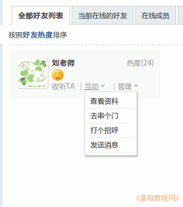

2014-2015 第一学期七年级文字处理和网页教学设计
作者：TeliuTe 来源：基础教程网
七、学会与好友交流 返回目录 下一课
（一）教学设计
1、学习目标：学会Ubuntu基本操作，校园网操作，中英文指法
2、注意事项：绕过弯来，既不要跳也不要落，一楼过了二楼
3、教学过程：
1）教师准备学案和板书；
2）学生整队进入，开机抄黑板上笔记；
3）教师讲解板书演示操作；
4）学生打指法、日志、完成操作；
5）教师打勾记录学生指法成绩，检查日志和操作；
注：学生抄完笔记就开始打指法、日志，老师讲完后再继续完成；
（二）板书设计(学生笔记)
教学7-7 2014年09月18日 星期四 13:08
07学会与好友交流
1、点我的好友，点击访问空间
2、点给我留言，留言或打招呼
3、加新标签，点随便看看
4、点鲜花表态
操作图示：

（三）课后记
2014年 09月 13日 星期六
又停一天电，七年级学生上了问我让上自习，班干部管一下，吵得不行了上来叫老师
然后都没上来，可能是周末作业多，都在写作业了
--
本想着学积分和金币，后面发现好友交流还没学
如果跳过去的话，内容就有点多了，擦掉重新抄笔记
--
强调指法正确，40分就可以了，多了也还是40
汉字打词语，比如“学会、好友，我的”等等
--
有个机子老开不了机拿去修了，学生进来找不到机子乱喊，训一顿
顺便要求一下操作要稳，别乱点坏了去修费好多时间
--
马上要过保了，之后出问题就得自己弄了，LX的机子也这么多问题的
像是电池问题，但是换了过一阵还是不行，拿去修一下看看
--
还有卡住输入法的，注销重新进去，火狐关不了，点右键退出
注意标签，这节课有四个新标签，排好放在
--
举例子做一个，其他自己再多练，好友提醒是在前面批准好友时提过
时间是足够的，把正确姿势打字鼠标左右键都可以
--
学生挣金币的积极性挺高的，把变色卡放50个金币，让多挣一些
刷经验的太多，胡乱发的
--
1班的学生太活跃，粗心计数批评的同学，没有保存，没有自己可见
做的倒是挺快的，不要求速度，要求正确率，忘记讲打招呼了，太多了容易乱
--
表态全部让用鲜花，这样检查的时候好检查，也培养一下先向善的为主
批阅的时候问一下学生这是什么操作，这是本节课学习的什么，大都可以回答上来
返回目录 下一课
本教程由86团学校TeliuTe制作|著作权所有
基础教程网：http://teliute.org/
美丽的校园……
转载和引用本站内容，请保留作者和本站链接。